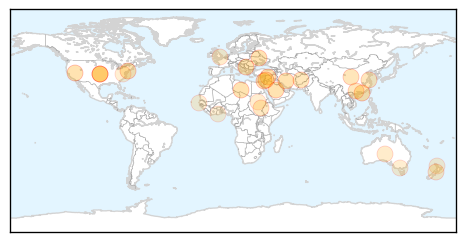
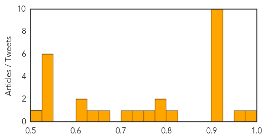

Toggle navigation
Early Warning
Daily Alerts
Unknown
Feb 02, 2014
Compare to:
-
Dengue Fever
Hemmorhagic Fever
Mold/Fungal Infection
Influenza
Meningitis
Pertussis / Whooping Cough
Middle East Respiratory Syndrome
Cholera
Hepatitis
Chikungunya
Yellow Fever
Bubonic Plague
West Nile Virus
Swine Flu
Ebola
Measles
Mumps
30 Day Trends
Web: 15
alerts
, 2
warnings
Twitter: 1
alerts
, 0
warnings
Top Articles:
0.977
6 more bird flu cases reported, 1 of them fatal
0.964
Pig-virus vaccine helping to curb deaths in U.S., manufacturer says
0.917
Chicago Tribune
0.917
Chicago Tribune
0.917
Chicago Tribune
0.917
Chicago Tribune
0.917
Chicago Tribune
0.917
Chicago Tribune
0.917
Chicago Tribune
0.917
Chicago Tribune
0.917
Chicago Tribune
0.917
Chicago Tribune
0.812
UVa helping Russians fight outbreak of TB
0.798
254 fall victim to Leishmaniasis in Landikotal
0.777
(UPDATE) China reports H7N9 death, more cases
0.773
Three new H7N9 cases in China
0.746
Vaccine may stem spread of pig virus on Ontario hog farms
0.701
3.7 million suffer severe food insecurity in South Sudan
0.667
Is your cruise safe?
0.647
Parts of hospital 'an infection risk'
0.611
New case of piglet-killing disease detected
0.607
Overseas travel raises risk of superbug infection
0.549
MSF staff, patients forced to flee amid security fears in Unity state
0.541
Australian expert: More tourists returning from overseas infected with superbugs
0.539
Fear and ignorance fuel spread of leprosy in Africa
0.534
Three Rapid Response Grants Awarded by NSF to Study West Virginia Chemical Spill
0.531
Leprosy continues to maim Africans
0.527
Antifluoride campaigner opens debate in Auckland
0.508
Ghana, Business Advice, Jobs, News, Business Directory, Real Estate, Finance, Forms, Auto
Top Tweets:
No tweets found for Feb 02, 2014
Web/News Articles
Tweets
Article Locations

Article Confidences
